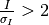
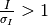

Parameters¶
Commonly used program options¶
There are a number of program options used on a daily basis in xia2, which are:
-atom X tell xia2 to separate anomalous pairs i.e. I(+) I(−) in scaling
-2d tell xia2 to use MOSFLM and Aimless -3d tell xia2 to use XDS and XSCALE -3dii tell xia2 to use XDS and XSCALE, indexing with peaks found from all images -dials tell xia2 to use DIALS and Aimless -xinfo modified.xinfo use specific input file -image /path/to/an/image.img process specific scan -small molecule process in manner more suited to small molecule data space_group=sg set the spacegroup, e.g. P21 unit_cell=a,b,c,α,β,γ set the cell constants
Resolution limits¶
The subject of resolution limits is one often raised - by default in xia2 they are:
- Merged 
- Unmerged 
However you can override these with -misigma, -isigma
Phil parameters¶
Note
We are currently moving towards moving PHIL (Python-based Hierarchial Interchange Language) for specifying xia2 program parameters, which will in the long run help the documentation, but in the mean time you may see some warnings as certain parameters are changed from -param style parameters to param= style PHIL parameters. If you see, e.g.:
Warning: -spacegroup option deprecated: please use space_group='P422' instead
Warning: -resolution option deprecated: please use d_min=1.5 instead
don’t panic - this is to be expected - but you may want to change the way you run xia2 or your scripts. More of a warning for beamline / automation people! The outcome of this should however be automated generation of command-line documentation and the ability to keep “recipes” for running xia2 in tidy files.
Here is a comprehensive list of PHIL parameters used by xia2:
general {
check_image_files_readable = True
}
xds {
delphi = 5
delphi_small = 30
untrusted_ellipse = None
untrusted_rectangle = None
trusted_region = None
profile_grid_size = None
correct {
refine = *DISTANCE *BEAM *AXIS *ORIENTATION *CELL *POSITION
}
integrate {
refine = *ORIENTATION *CELL *BEAM *DISTANCE AXIS *POSITION
refine_final = *ORIENTATION *CELL BEAM DISTANCE AXIS POSITION
fix_scale = False
delphi = 0
reflecting_range = 0
reflecting_range_esd = 0
beam_divergence = 0
beam_divergence_esd = 0
reintegrate = true
}
init {
fix_scale = False
}
index {
refine = *ORIENTATION *CELL *BEAM *DISTANCE *AXIS *POSITION
debug = *OFF ON
}
colspot {
minimum_pixels_per_spot = 1
}
xscale {
min_isigma = 3.0
}
merge2cbf {
merge_n_images = 2
data_range = None
moving_average = False
}
}
dials {
fix_geometry = False
outlier.algorithm = null *auto mcd tukey sauter_poon
fast_mode = False
find_spots {
min_spot_size = Auto
min_local = 0
phil_file = None
sigma_strong = None
filter_ice_rings = False
kernel_size = 3
global_threshold = None
}
index {
method = fft1d *fft3d real_space_grid_search
phil_file = None
max_cell = 0.0
use_all_reflections = False
fft3d.n_points = None
}
refine {
scan_varying = True
interval_width_degrees = 36.0
use_all_reflections = True
phil_file = None
reflections_per_degree = 100
}
integrate {
phil_file = None
profile_fitting = True
background_outlier_algorithm = *null nsigma truncated normal tukey mosflm
background_algorithm = simple null *glm
use_threading = False
include_partials = True
}
}
ccp4 {
truncate {
program = 'ctruncate'
}
reindex {
program = 'pointless'
}
aimless {
intensities = summation profile *combine
surface_tie = 0.001
surface_link = True
}
}
xia2.settings {
input {
image = None
json = None
reference_geometry = None
xinfo = None
gain = None
min_images = 10
min_oscillation_range = None
}
sweep {
id = None
range = None
exclude = False
}
scale {
directory = Auto
}
unit_cell = None
space_group = None
d_min = None
d_max = None
optimize_scaling = False
unify_setting = False
beam_centre = None
trust_beam_centre = False
wavelength_tolerance = 0.00001
read_all_image_headers = True
detector_distance = None
show_template = False
untrusted_rectangle_indexing = None
xds_cell_deviation = 0.05, 5.0
use_brehm_diederichs = False
developmental {
use_dials_spotfinder = False
pointless_tolerance = 0.0
}
integrate_p1 = False
reintegrate_correct_lattice = True
xds {
geometry_x = None
geometry_y = None
}
indexer = mosflm labelit labelitii xds xdsii xdssum dials
refiner = mosflm xds dials
integrater = mosflmr xdsr mosflm xds dials
scaler = ccp4a xdsa
verbose = False
multiprocessing {
mode = *serial parallel
nproc = Auto
njob = Auto
type = *simple qsub
qsub_command = ''
}
}